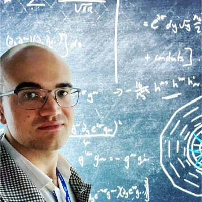
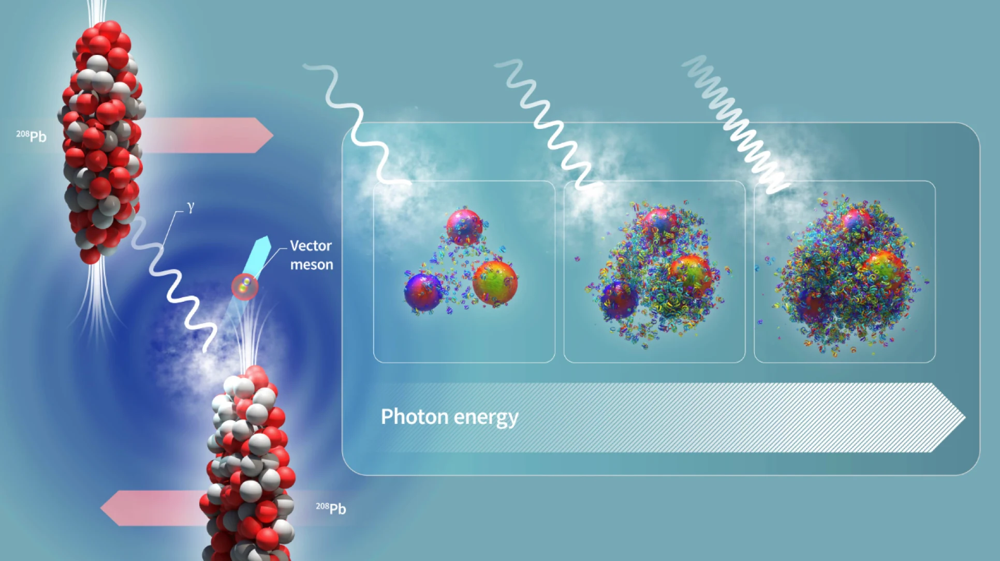
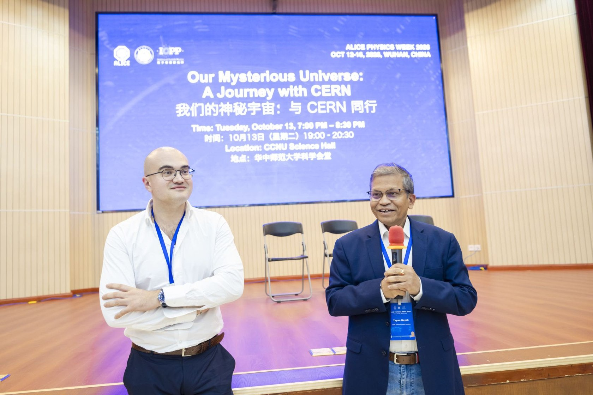
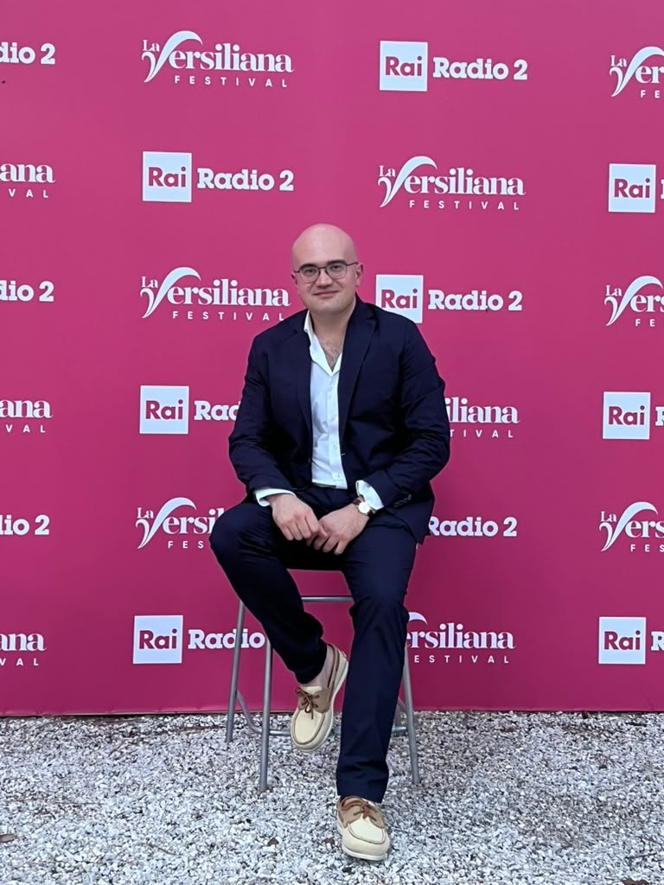

01 / PHOTONUCLEAR PHYSICS
Ultra-peripheral collisions
Using coherent and incoherent vector-meson photoproduction to investigate the gluonic structure of nuclei, shadowing and saturation at low Bjorken-x.
J/ψ · nuclear structure · low-x QCDI'm Simone Ragoni, an Assistant Professor at the University of Silesia and Outreach Coordinator of the ALICE Collaboration at CERN. I study ultra-peripheral collisions, the structure of nuclear matter and new ways to find physics in complex data.

Particle accelerators are extraordinary microscopes. Sometimes the most interesting events happen when particles don't collide head-on.
I'm an experimental high-energy physicist working on the ALICE experiment at CERN's Large Hadron Collider. My research focuses on ultra-peripheral collisions (UPCs): photon-induced interactions that let us study nuclear structure, strong-interaction physics and the emergence of complex behaviour in small collision systems.
I work across data analysis, machine learning and phenomenology, while supporting students and sharing the excitement of physics beyond the research community.
PREVIOUS ALICE ROLE Convenor of the ALICE UPC Physics Analysis Group, October 2024 – October 2026.
Explore my academic record on ORCIDFrom photonuclear interactions to machine learning, I use the unique reach of ALICE to ask new questions about matter.
Using coherent and incoherent vector-meson photoproduction to investigate the gluonic structure of nuclei, shadowing and saturation at low Bjorken-x.
J/ψ · nuclear structure · low-x QCDStudying identified-particle production and possible signatures of collectivity in photon–nucleus interactions, including pions, kaons and protons.
Hadron spectra · collectivity · Run 3Exploring data-driven anomaly detection, novel event tagging and femtoscopic observables to connect collision dynamics with spatial structure.
AI · correlations · simulation
In ultra-peripheral heavy-ion encounters, quasi-real photons probe nuclear matter. From vector-meson photoproduction to inclusive particle production, the photon-energy frontier opens up new ways of exploring QCD.
Explore my UPC presentationsSelected peer-reviewed work. A complete publication record is available on ORCID ↗.
I enjoy helping students make the transition from learning physics to actually doing it—working with real data, testing ideas and finding their own research questions.
Discuss a research projectUniversity of Silesia · Physics
University of Silesia · Physics
Teaching demonstrator · University of Birmingham
Teaching assistant · University of Birmingham
A searchable archive of conference talks, seminars, posters and selected public presentations, spanning 2018–2026.
EMMI Workshop · Mining for gluon saturation at the LHC and the future EIC
Institute of Physics Seminar · Chorzów
All talks listed in my CV, plus earlier site entries and verified 2026 additions.
Showing the latest presentations.
ALICE Physics Week 2026 · educational outreach Central China Normal University, Wuhan, China
EMMI Workshop: Mining for gluon saturation at the LHC and the future EIC GSI, Darmstadt, Germany
Institute of Physics Seminar · University of Silesia Chorzów, Poland
Creighton University Seminar Omaha, USA
European Physical Society Conference on High Energy Physics (EPS-HEP) Marseille, France
European Physical Society Conference on High Energy Physics (EPS-HEP) Marseille, France
European Physical Society Conference on High Energy Physics (EPS-HEP) Marseille, France
International Workshop on the Physics of Ultra Peripheral Collisions (UPC 2025) Finland
Quark Matter 2025 Frankfurt, Germany
University of Sonora Seminar Sonora, Mexico
Forward Physics Workshop CERN, Geneva, Switzerland
ALICE Physics Week Salerno, Italy
Diffraction and Low-x Palermo, Italy
International Workshop: QCD Challenges from pp to A–A Collisions Münster, Germany
International Conference on High Energy Physics (ICHEP) Prague, Czechia
WE-Heraeus Forward Physics Workshop · poster & flash talk (honourable mention) Bonn, Germany
Quark Matter 2023 Houston, USA
CERN Seminar · invited CERN, Geneva, Switzerland
Rencontres de Moriond QCD · invited La Thuile, Italy
ALICE Physics Week Bucharest, Romania
Public book presentation · City Hall Carrara, Italy
24th IPPOG Meeting CERN, Geneva, Switzerland
CIPANP · invited Orlando, USA
ALICE Physics Week CERN, Geneva, Switzerland
Large Hadron Collider Physics Conference (LHCP) · ALICE/LHCb Online
Joint Institute of Physics Nuclear / Particle / Astroparticle Conference Online
ALICE Physics Week Online
Diffraction and Low-x Elba, Italy
Large Hadron Collider Physics Conference (LHCP) Online
High-school outreach presentation Pisa, Italy
ALICE Physics Week Online
ALICE Juniors Day Online
UK Nuclear Lockdown Seminars Online
ALICE Physics Week Prague, Czechia
International Nuclear Physics Conference (INPC) Glasgow, UK
ALICE Juniors Day CERN, Geneva, Switzerland
Large Hadron Collider Physics Conference (LHCP) Bologna, Italy


Festivals, masterclasses and conversations that connect physics with new audiences.
As ALICE Outreach Coordinator, I help bring the collaboration's science to students, teachers and the wider public. I work with colleagues on International Masterclasses, public events and science communication, including activities with IPPOG.
During the collaboration's Physics Week at Central China Normal University, the outreach programme brought particle physics closer to local students through public talks, an ALICE Masterclass and interactive activities.
Read the ALICE event reportAssistant Professor · Chorzów, Poland
Postdoctoral researcher · Omaha, USA
PhD in Physics · United Kingdom
BSc & MSc in Physics · Italy
Interested in physics, a collaboration, a seminar or an outreach idea? I'd be glad to hear from you.
simone.ragoni@cern.ch